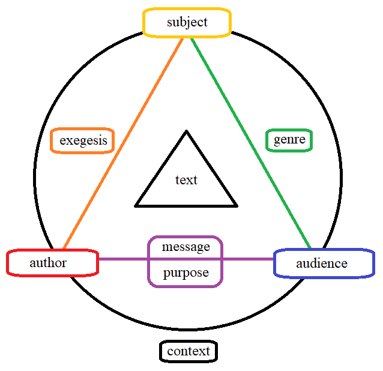

When we read a piece of writing, we can consider it alone, separate and apart. But even if we view something as apart, it nevertheless is a part of a greater whole. This greater whole, in the context of any text, is referred to as its rhetorical situation.
There are a number of elements to the rhetorical situation of any text. We shall consider them here.
The elements of the rhetorical situation, and their relations between them, can be represented as a diagram:
Take your time to understand each element and how it relates to the others. It may seem complex at first glance, but with some practice, you'll find that you can apply it to any text quite easily.
Once you're armed with the words to describe the elements of the rhetorical situation, we can begin to analyze the choices authors have made when creating texts.
Onward to Analyzing the Rhetorical Situation.
Back to subject mainpage.